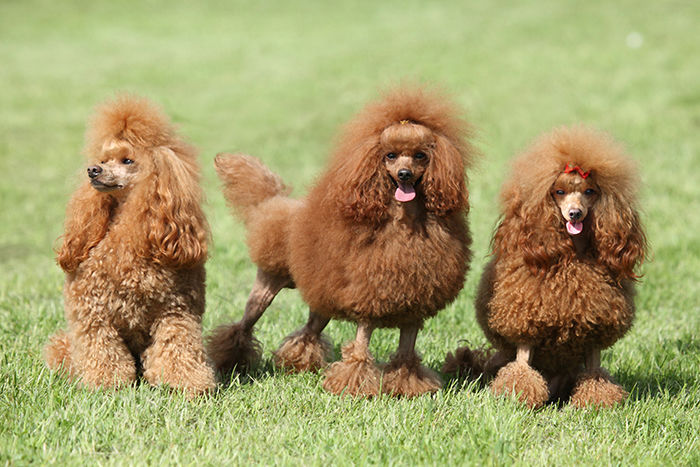
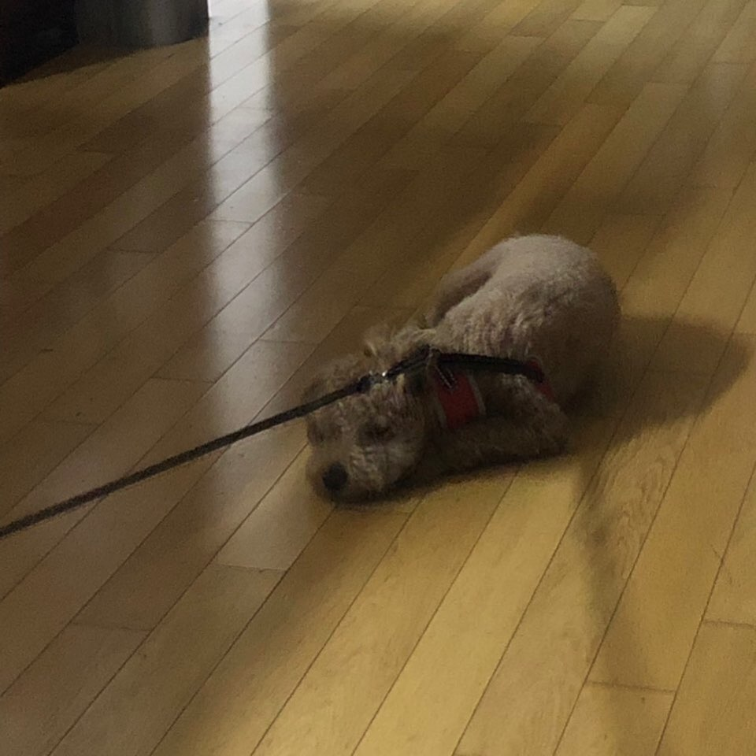

감자는 푸들이다. 푸들에 대해 알아보자

- 점잖고 차분한 스탠다드 푸들, 친밀한 성격의 미니어처 푸들, 작지만 똘똘한 토이 푸들!
푸들은 대체적으로 가장 영리한 개중의 하나로 알려져 있다. 때때로 푸들은 너무 영악해 장난치는 방법을 만들고는 그만두는 방법을 생각하지 않을 정도로 높은 지능을 갖고 있다. 그래서 푸들은 서커스에서 다양한 재주를 부리며 스타견으로 활동하였고, 심지어 푸들을 이용해 연극까지 상영되었다.
그래서 푸들은 산책을 매우 좋아하고, 체력도 굉장히 좋아 계속 뛰어다닌다고 하여 감자를 우리집에 데려왔을 때 시간이 날 때마다 하루에 두세번씩 산책을 나가게 해주었다. 그런데 산책이 지겨워서 그런건지, 날씨가 더워져서 그런건지 몰라도 지금은..

산책을 싫어한다.
그래서 날씨가 안좋거나 더운날에는 감자의 여자친구 줄리를 우리집으로 불러서 같이 놀고 있다. 감자보다 우리가족이 더 산책을 하고싶어한다.